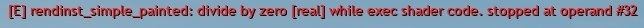

rendinst_simple_painted
Overview
This is a basic shader for render instances that includes the ability to apply color from a paint texture. Aside from this feature, it is identical to the rendinst_simple shader.
Important
By default, this shader does not apply paint across the entire texture. Instead, it only affects the range defined by the black and white points (explained below). Out of the box, the shader will not fully paint the texture.
If you find that the paint is not being applied as expected – either it doesn’t appear at all or the color is incorrect – the likely issue is that your texture is too dark for the shader’s default settings.
Configure the paint point settings to achieve the desired result.
Unfortunately, the default settings are hardcoded, so they cannot be easily modified.
Textures
As mentioned, this shader is identical to rendinst_simple, with support for microdetails.
tex0: Diffuse Albedo
tex2: Normals + Metalness + Smoothness
Parameters
The shader uses the following parameters:
paint_palette_row = 1– Specifies the row number in the paint texture to use. Default is row 1 (can be omitted if unchanged).paint_white_point=0.2– The diffuse brightness level at which the albedo will be fully painted.paint_black_point=0.05– The diffuse brightness level below which the albedo will not be painted.paint_mult = 1 or 2– Specifies the paint multiplier. Default is1. Set to2for a 2x multiplier.paint_details = 1– Configures the intensity of the paint, similar to other shaders with multiple detail levels.paint_const_color=0.5,0,0,0– Specifies a constant paint color. The first three components define the color, and the last component toggles between modulating with the palette color (0) or replacing it with the constant color (1).
The paint_white_point and paint_black_point parameters define the brightness
range of the albedo that will be affected by the paint. By default, the shader
applies paint from darker to lighter areas, meaning it won’t paint anything
below the black point and will fully paint anything above the white point.
Note
You can invert this range by swapping the values. For example:
paint_white_point=0.02paint_black_point=0.5
In this case, darker areas will be painted, and lighter areas will not.
Warning
If you encounter a “divide by zero” error,
{kind=link}
it means you’ve set both parameters to the same value:
script:t="paint_white_point=0"script:t="paint_black_point=0"
or
script:t="paint_white_point=0.5"script:t="paint_black_point=0.5"
Paint Texture
The paint texture consists of several rows, each only 1 pixel in height. The texture width must be at least 256 pixels (256 is recommended as it is more than sufficient).
For example, a texture with three rows:
{kind=link}
Paint Texture Row Numbering
Row numbering starts at 0. The convention is as follows:
Row 0: Exterior walls of buildings.
Row 1: Building trim (shutters, doors, windows, frames).
Other Rows: Assigned as needed by the level designer and asset manager.
Assigning a Paint Texture to a Level
The texture is assigned to shader variables in the scene via
paint_details_tex:t="texture_name*".
For example, in the Tunisia map, this is defined as follows:
File path:
.../prog/gameBase/content/e_tunisia/gameData/scenes/tunisia_city_assault.blkBlock:
entity{ _template:t="shaderVars" }
Line:
paint_details_tex:t="tunisia_wall_color_tex_palette*"
How It Works?
When an object moves across the map, a color pixel is selected from the specified row in the paint texture based on an algorithm. This pixel’s color is then applied to the object’s material.
If the object has multiple materials assigned to different paint rows, the shader will select a single column of pixels from those specified rows.
If the object is a composite object, the same column of pixels will be used for all the objects and materials within it.
For example, you might use row 0 to paint the walls blue and row 1 to paint the windows and doors gray, ensuring that all windows and doors in the composite object share the same color.
{kind=link}
This approach ensures consistent color application, preventing cases where a single building has windows with varying colors.